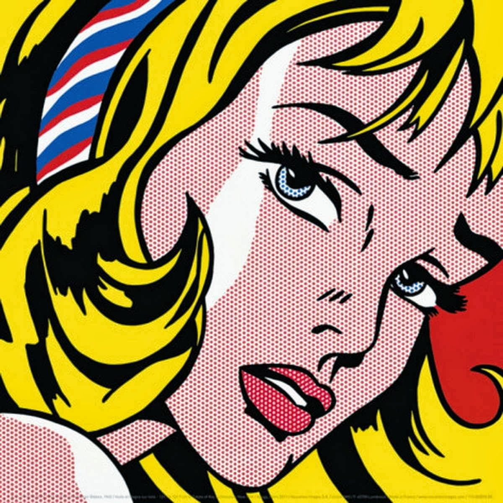

อารมณ์ของภาพและวาทศิลป์
อารมณ์ของภาพ คือการสื่อความรู้สึกผ่านองค์ประกอบทางการมองเห็น เช่น สี แสง และเส้น ส่วน วาทศิลป์ คือการสื่อความรู้สึกและความคิดผ่านศิลปะการใช้ภาษา ทั้งสองอย่างจึงเป็น "ศิลปะแห่งการสื่อสาร" ที่ทำหน้าที่ส่งผ่านอารมณ์และโน้มน้าวใจมนุษย์เหมือนกัน เพียงแต่ใช้เครื่องมือต่างกันระหว่างภาพกับคำพูด